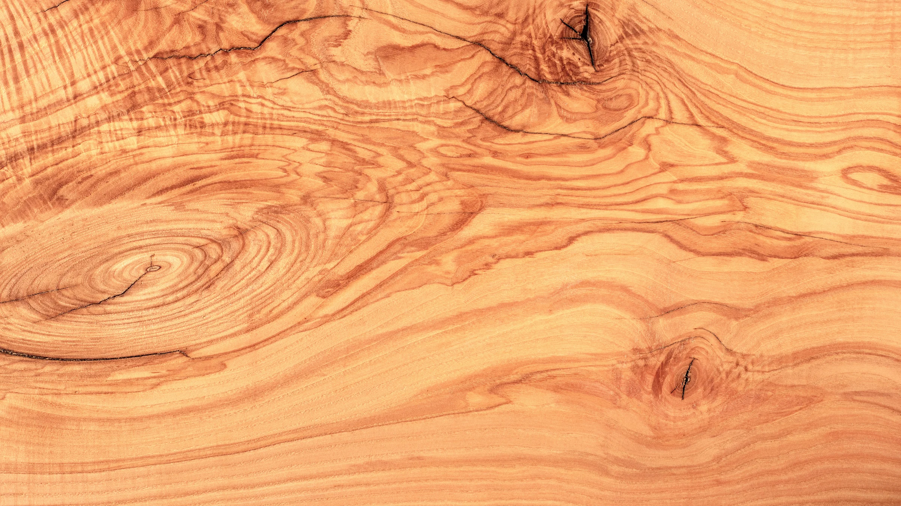
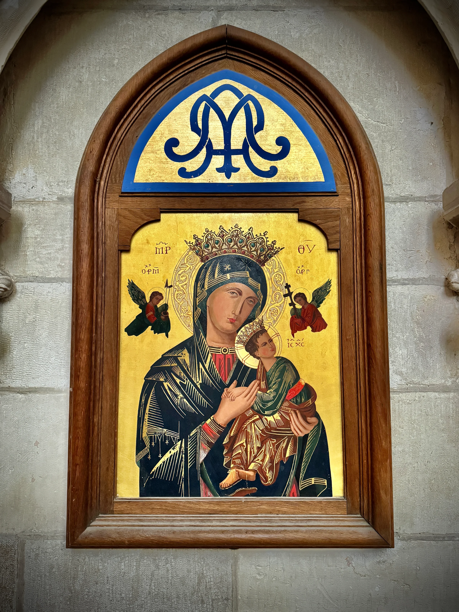

ΔΙΑ ΧΕΙΡΟΣ
Βυζαντινές Εικόνες Χειροποίητες
με Προσευχή & Παράδοση
Αυθεντικές Ορθόδοξες αγιογραφίες δημιουργημένες με αιώνιες τεχνικές: ξύλο, χρυσό φύλλο, και φυσικές χρωστικές
Κάθε εικόνα είναι μοναδική – Χειροποίητη με αφοσίωση στην παράδοση της Βυζαντινής τέχνης
Χειροποίητο στην Ελλάδα με αγάπη και σεβασμό στην παράδοση
Η Παράδοση της Βυζαντινής Αγιογραφίας
Από αιώνες, δημιουργούμε ιερές εικόνες που φέρνουν την πνευματικότητα στο σπίτι σας

Χειροποίητες Εικόνες με Αγάπη και Προσευχή
Το εργαστήριό μας ακολουθεί τις αυθεντικές τεχνικές της Βυζαντινής αγιογραφίας, όπως διδάχθηκαν και διατηρήθηκαν για αιώνες στους ιερούς ναούς της Ορθοδοξίας.
Κάθε εικόνα δημιουργείται με φυσικά υλικά: ξύλο, γύψο, χρυσό φύλλο, και φυσικές χρωστικές αναμεμειγμένες με κρόκο αυγού (egg tempera), όπως ακριβώς γινόταν στο Βυζάντιο.
"Η αγιογραφία δεν είναι απλώς τέχνη – είναι προσευχή, λατρεία, και παράδοση που ζωντανεύει στα χέρια μας."
Προτεινόμενες Εικόνες
Επιλεγμένες χειροποίητες βυζαντινές εικόνες για το σπίτι και τον ναό σας

Πάνω από 50 διαθέσιμα σχέδια
Η Διαδικασία Δημιουργίας
Από το ξύλο στη χρυσή επιφάνεια – κάθε βήμα με προσοχή και προσευχή
Προετοιμασία Ξύλου
Επιλέγουμε προσεκτικά ξύλο υψηλής ποιότητας και το προετοιμάζουμε με παραδοσιακές μεθόδους. Το ξύλο επικαλύπτεται με λινό ύφασμα και στρώματα γύψου (levkas).
Σχεδιασμός
Με μολύβι και σύμφωνα με τους βυζαντινούς κανόνες αναλογιών, σχεδιάζουμε την εικόνα στην επιφάνεια. Κάθε γραμμή ακολουθεί την ιερή παράδοση.
Εφαρμογή Χρυσού Φύλλου
Το πραγματικό χρυσό φύλλο 24 καρατίων εφαρμόζεται με προσοχή στις επιλεγμένες περιοχές, δημιουργώντας τη χαρακτηριστική λάμψη των βυζαντινών εικόνων.
Ζωγραφική με Egg Tempera
Χρησιμοποιούμε φυσικές χρωστικές αναμεμειγμένες με κρόκο αυγού, όπως ακριβώς στο Βυζάντιο. Κάθε στρώμα προσθέτει βάθος και ζωή.
Γήρανση & Προστασία
Η τελική προστασία με ειδικό βερνίκι διατηρεί την εικόνα για γενιές. Ορισμένες εικόνες περνούν από διαδικασία γήρανσης για να αποκτήσουν την αίγλη των αιώνων.
Μοναδικά Έργα Τέχνης – Παγκόσμια Πρώτη
Αγιογραφίες σε ολόκληρο κορμό αιωνόβιας ελληνικής ελιάς
κομμένο κατά το διάμηκες
Δύο μόνο έργα υπάρχουν στον πλανήτη. Σκαλισμένα και αγιογραφημένα στο χέρι από τη Νικολού-Δέλη, πάνω σε φυσικούς κορμούς ελιάς που διατηρούν το αρχικό τους σχήμα και την ψυχή του δέντρου. Δεν υπάρχει πουθενά αλλού όμοιό τους.



Παναγία με το Θείο Βρέφος
Το πρώτο έργο φιλοξενεί την Παναγία με το Θείο Βρέφος, αγιογραφημένη με την κλασική βυζαντινή τεχνική επάνω στο φυσικό κορμό ελιάς. Το ξύλο διατηρεί την αυθεντική του φλοιώδη υφή, τα φυσικά του ρωγμίσματα και τη ζωή που κουβαλά εκατοντάδες χρόνια.
«Η αγιογραφία ενώνεται οργανικά με τη φύση του ξύλου, δημιουργώντας ένα έργο που δεν είναι απλώς εικόνα, αλλά γλυπτό με ψυχή και ιστορία. Κάθε γραμμή του δέντρου συμπλέκεται με την ιερή μορφή, σαν η Παναγία να αναδύεται από τον ίδιο τον κορμό.»
Χριστός Παντοκράτωρ
Το δεύτερο έργο απεικονίζει τον Χριστό Παντοκράτορα σε όλο το μεγαλείο Του, σκαλισμένο επάνω σε έναν ακόμη μεγαλύτερο και πιο μνημειώδη κορμό ελιάς. Η χρυσή επιχρύσωση αναδύεται από το σκοτεινό ξύλο, δημιουργώντας μία ισχυρή αντίθεση μεταξύ γης και ουρανού.
«Το δέντρο που έζησε αιώνες τώρα φιλοξενεί την αιώνια εικόνα του Χριστού. Κάθε ρωγμή, κάθε γραμμή του ξύλου συνομιλεί με την αγιογραφία, δημιουργώντας ένα έργο μοναδικής πνευματικής και καλλιτεχνικής αξίας.»

Παγκόσμια Αποκλειστικότητα
Καμία άλλη αγιογράφος ή εργαστήριο στον κόσμο δεν έχει δημιουργήσει μέχρι σήμερα παρόμοια έργα. Φιλοξενούνται στο κατάστημά μας Dia Xeiros Nikolou-Deli, στην Αρχαία Κόρινθο.
Προσωπική επίσκεψη κατόπιν ραντεβού για να δείτε τα έργα από κοντά
Παράγγειλε την Προσωπική σου Εικόνα
Θέλεις μια μοναδική εικόνα για βάπτιση, γάμο, ονομαστική εορτή ή για το σπίτι σου;
Χρόνος παράδοσης: 4-8 εβδομάδες